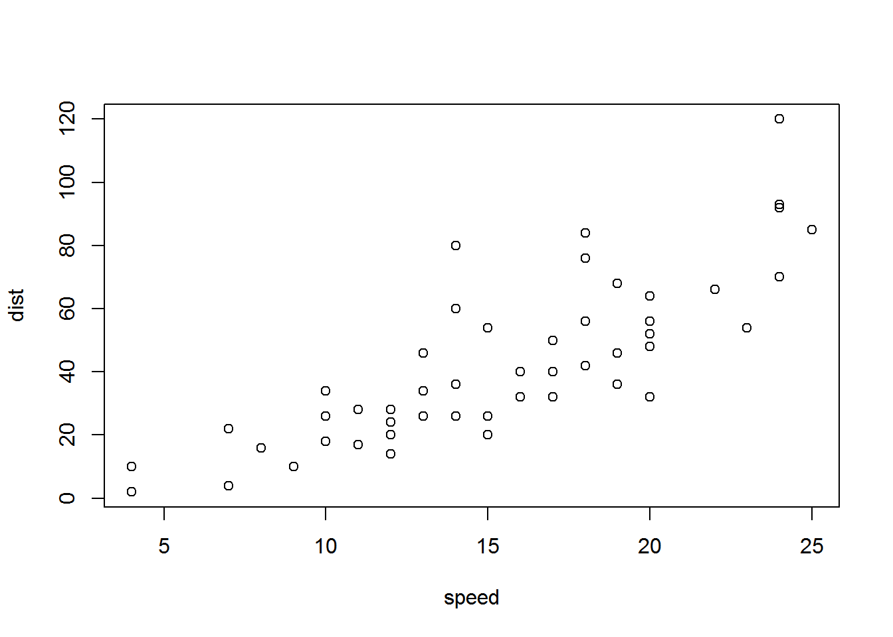

This is an R Markdown Notebook. When you execute code within the notebook, the results appear beneath the code.
Try executing this chunk by clicking the Run button within the chunk or by placing your cursor inside it and pressing Ctrl+Shift+Enter.
plot(cars)
Add a new chunk by clicking the Insert Chunk button on the toolbar or by pressing Ctrl+Alt+I.
When you save the notebook, an HTML file containing the code and output will be saved alongside it (click the Preview button or press Ctrl+Shift+K to preview the HTML file).